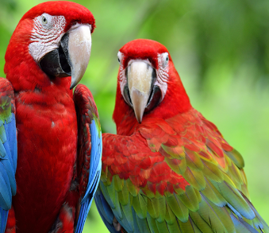
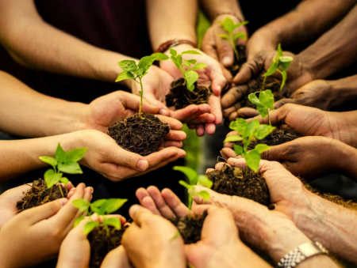
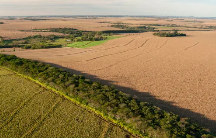
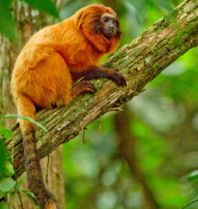
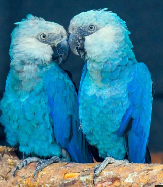
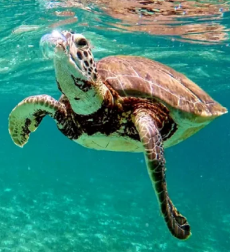
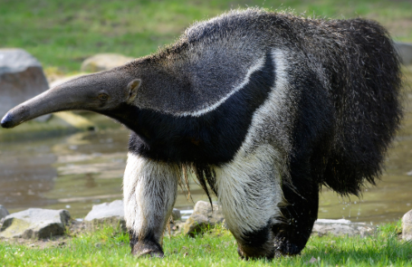
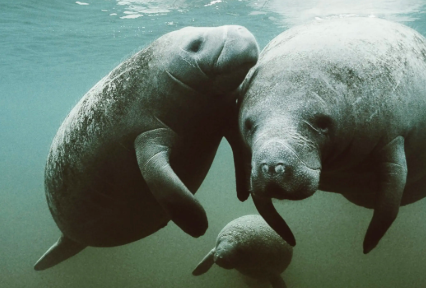

Projeto Onça-Pintada
Monitoramento com armadilhas fotográficas e proteção de corredores ecológicos para o maior felino das Américas.
Ações de conservação para proteger a fauna ameaçada e os ambientes onde ela vive.
Monitoramento com armadilhas fotográficas e proteção de corredores ecológicos para o maior felino das Américas.

Reflorestamento de áreas degradadas com espécies nativas, devolvendo abrigo e alimento à fauna.

Estudo de populações e proteção de ninhos de aves ameaçadas de extinção.

Atendimento, reabilitação e soltura de animais vítimas de tráfico, atropelamento e queimadas.

Palestras e oficinas em escolas e comunidades sobre a importância de proteger a biodiversidade.

Conexão de fragmentos de mata para que os animais circulem com segurança e se reproduzam.
Histórias de espécies brasileiras que mostram por que a conservação importa.

Habitante da Mata Atlântica fluminense, chegou perto da extinção pela perda de floresta. Com reprodução em cativeiro, reintrodução e corredores de mata, teve sua situação melhorada, um dos maiores exemplos de sucesso da conservação brasileira.

Nativa da Caatinga, foi considerada extinta na natureza por anos. Aves criadas sob cuidado humano foram levadas de volta à Bahia em um programa de reintrodução que acompanha cada passo da espécie.

Ameaçadas pela pesca acidental, poluição e ocupação das praias. O monitoramento de desovas e a proteção dos ninhos no litoral brasileiro ajudam os filhotes a chegarem ao mar.

Símbolo do Cerrado, sofre com atropelamentos em rodovias e com a conversão do habitat em lavouras e pastagens.

Vulnerável à extinção, é muito afetado por queimadas e atropelamentos. Seu desaparecimento prejudica o controle natural de cupins e formigas.

Um dos mamíferos aquáticos mais ameaçados do Brasil. Resgate de filhotes encalhados, reabilitação e soltura fazem parte da luta para salvá-lo.
Participe de ações de campo, eventos e educação ambiental.
Compartilhe nossos projetos e conscientize quem está perto de você.
Nunca compre animais silvestres e evite produtos de origem ilegal.